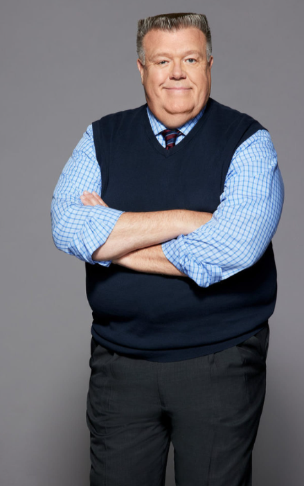

Joel McKinnon Miller nasceu em Rockford, Minnesota , em 21 de fevereiro de 1960. Ele teve aulas de canto de ópera quando criança, e mais tarde frequentou a Universidade de Minnesota Duluth, onde estudou teatro e ópera. Ele desistiu em 1983 para participar da The Acting Company, mas retornou à sua alma mater para terminar sua graduação em teatro com ênfase em atuação em 2007.
Antes de Big Love , o papel principal na televisão de McKinnon Miller foi o de Lyle Nubbin em três episódios de Las Vegas . Desde 1991, ele também apareceu como ator convidado em várias séries de televisão americanas, incluindo Cold Case , Murphy Brown , The Commish , Curb Your Enthusiasm , Pacific Blue , Dharma & Greg , The X Files , ER , Malcolm in the Middle , Roswell , CSI: Crime Scene Investigation , Deadwood , Six Feet Under , Desperate Housewives ,Boston Legal , American Horror Story , The Closer e Everybody Loves Raymond (no qual ele interpretou George, o zelador, no episódio " The Faux Pas ").
O maior papel no cinema de McKinnon Miller está no premiado filme de televisão de 2003, Secret Santa . Ele também interpretou personagens coadjuvantes nos filmes The Truman Show , Galaxy Quest , Rush Hour 2 e Men in Black II , e forneceu a voz de Bromley no filme de animação The Swan Princess . Ele era um membro do elenco principal em toda a série de TV Brooklyn Nine-Nine como o detetive Norm Scully.
Em 30 de dezembro de 2018, McKinnon Miller cantou o hino nacional no US Bank Stadium . Ele se identificou como um fã de longa data do Minnesota Vikings .
Ele se casou com Tammy McKinnon em 1984 e vive em Los Angeles desde 1991. Ele e sua esposa têm dois filhos, Owen e Caitlyn. Sua filha Caitlyn é uma planejadora ambiental e se casou em outubro de 2019.